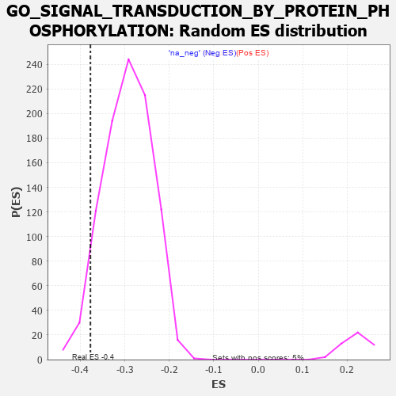

| | | Dataset | 7d |
| Phenotype | NoPhenotypeAvailable |
| Upregulated in class | na_neg |
| GeneSet | GO_SIGNAL_TRANSDUCTION_BY_PROTEIN_PHOSPHORYLATION |
| Enrichment Score (ES) | -0.37718168 |
| Normalized Enrichment Score (NES) | -1.2859769 |
| Nominal p-value | 0.06414301 |
| FDR q-value | 0.49199736 |
| FWER p-Value | 1.0 |
Table: GSEA Results Summary
 Fig 1: Enrichment plot: GO_SIGNAL_TRANSDUCTION_BY_PROTEIN_PHOSPHORYLATION
Fig 1: Enrichment plot: GO_SIGNAL_TRANSDUCTION_BY_PROTEIN_PHOSPHORYLATION
Profile of the Running ES Score & Positions of GeneSet Members on the Rank Ordered List
| PROBE | GENE SYMBOL | GENE_TITLE | RANK IN GENE LIST | RANK METRIC SCORE | RUNNING ES | CORE ENRICHMENT | | 1 | TGFB3 | | | 49 | 2.654 | 0.0217 | No |
| 2 | IRS1 | | | 98 | 1.659 | 0.0331 | No |
| 3 | AXIN1 | | | 166 | 1.159 | 0.0367 | No |
| 4 | WNT16 | | | 198 | 1.072 | 0.0441 | No |
| 5 | HGF | | | 276 | 0.870 | 0.0434 | No |
| 6 | LRP1 | | | 470 | 0.648 | 0.0255 | No |
| 7 | PKN1 | | | 535 | 0.619 | 0.0238 | No |
| 8 | DHX33 | | | 605 | 0.593 | 0.0212 | No |
| 9 | ID1 | | | 719 | 0.555 | 0.0126 | No |
| 10 | IGBP1 | | | 869 | 0.514 | -0.0011 | No |
| 11 | NLK | | | 911 | 0.504 | -0.0010 | No |
| 12 | PDCD4 | | | 941 | 0.497 | 0.0005 | No |
| 13 | DVL3 | | | 971 | 0.490 | 0.0019 | No |
| 14 | MEN1 | | | 1003 | 0.483 | 0.0031 | No |
| 15 | AKT1 | | | 1040 | 0.476 | 0.0035 | No |
| 16 | MEF2C | | | 1054 | 0.473 | 0.0068 | No |
| 17 | FZD10 | | | 1065 | 0.470 | 0.0105 | No |
| 18 | CDK10 | | | 1092 | 0.465 | 0.0121 | No |
| 19 | SRC | | | 1128 | 0.459 | 0.0124 | No |
| 20 | PSMD7 | | | 1152 | 0.454 | 0.0143 | No |
| 21 | PSMD2 | | | 1181 | 0.450 | 0.0154 | No |
| 22 | P2RY1 | | | 1416 | 0.407 | -0.0103 | No |
| 23 | RBX1 | | | 1445 | 0.401 | -0.0096 | No |
| 24 | TIMP2 | | | 1478 | 0.394 | -0.0096 | No |
| 25 | SOS1 | | | 1547 | 0.384 | -0.0143 | No |
| 26 | ERP29 | | | 1589 | 0.376 | -0.0155 | No |
| 27 | BRAP | | | 1660 | 0.363 | -0.0207 | No |
| 28 | PSMD4 | | | 1811 | 0.335 | -0.0364 | No |
| 29 | GATA4 | | | 1837 | 0.330 | -0.0361 | No |
| 30 | TRIM5 | | | 1852 | 0.327 | -0.0344 | No |
| 31 | PSMD6 | | | 1858 | 0.326 | -0.0316 | No |
| 32 | SMAD4 | | | 1860 | 0.326 | -0.0283 | No |
| 33 | NUP62 | | | 1871 | 0.324 | -0.0262 | No |
| 34 | PAK3 | | | 1889 | 0.322 | -0.0250 | No |
| 35 | CUL3 | | | 1893 | 0.321 | -0.0220 | No |
| 36 | HACD3 | | | 1932 | 0.315 | -0.0235 | No |
| 37 | ROR1 | | | 1993 | 0.306 | -0.0280 | No |
| 38 | RAF1 | | | 2011 | 0.303 | -0.0270 | No |
| 39 | LRRC7 | | | 2080 | 0.294 | -0.0326 | No |
| 40 | BMP7 | | | 2107 | 0.290 | -0.0329 | No |
| 41 | PSME4 | | | 2143 | 0.285 | -0.0343 | No |
| 42 | SYK | | | 2186 | 0.278 | -0.0368 | No |
| 43 | PSMF1 | | | 2251 | 0.268 | -0.0422 | No |
| 44 | SHC2 | | | 2263 | 0.266 | -0.0408 | No |
| 45 | MIF | | | 2357 | 0.252 | -0.0500 | No |
| 46 | HIPK2 | | | 2389 | 0.247 | -0.0514 | No |
| 47 | MET | | | 2430 | 0.240 | -0.0540 | No |
| 48 | FRS3 | | | 2482 | 0.229 | -0.0581 | No |
| 49 | PSMD5 | | | 2560 | 0.218 | -0.0657 | No |
| 50 | EMC10 | | | 2607 | 0.211 | -0.0693 | No |
| 51 | WDR83 | | | 2669 | 0.203 | -0.0750 | No |
| 52 | SASH1 | | | 2682 | 0.201 | -0.0744 | No |
| 53 | PHB2 | | | 2712 | 0.197 | -0.0761 | No |
| 54 | CUL1 | | | 2735 | 0.193 | -0.0769 | No |
| 55 | FGFR2 | | | 2895 | 0.167 | -0.0955 | No |
| 56 | ULK4 | | | 3022 | 0.146 | -0.1101 | No |
| 57 | MARK3 | | | 3031 | 0.145 | -0.1096 | No |
| 58 | ERN2 | | | 3160 | 0.129 | -0.1246 | No |
| 59 | GCNT2 | | | 3162 | 0.128 | -0.1234 | No |
| 60 | PSMD9 | | | 3179 | 0.125 | -0.1241 | No |
| 61 | SMAD1 | | | 3337 | 0.099 | -0.1432 | No |
| 62 | TAB1 | | | 3351 | 0.097 | -0.1439 | No |
| 63 | MED1 | | | 3405 | 0.089 | -0.1497 | No |
| 64 | HGS | | | 3476 | 0.080 | -0.1578 | No |
| 65 | HDAC3 | | | 3528 | 0.072 | -0.1636 | No |
| 66 | PIN1 | | | 3543 | 0.069 | -0.1647 | No |
| 67 | MAPK3 | | | 3589 | 0.062 | -0.1698 | No |
| 68 | STK25 | | | 3602 | 0.059 | -0.1707 | No |
| 69 | SKP1 | | | 3663 | 0.049 | -0.1779 | No |
| 70 | NF1 | | | 3713 | 0.040 | -0.1837 | No |
| 71 | HSF1 | | | 3718 | 0.039 | -0.1839 | No |
| 72 | DAXX | | | 3722 | 0.038 | -0.1838 | No |
| 73 | CCM2 | | | 3933 | 0.005 | -0.2107 | No |
| 74 | NCOR1 | | | 3961 | 0.000 | -0.2142 | No |
| 75 | IGF1R | | | 3970 | -0.002 | -0.2152 | No |
| 76 | SFRP2 | | | 4065 | -0.018 | -0.2270 | No |
| 77 | PDE8A | | | 4097 | -0.023 | -0.2308 | No |
| 78 | TRAF1 | | | 4104 | -0.024 | -0.2313 | No |
| 79 | ABL1 | | | 4125 | -0.027 | -0.2336 | No |
| 80 | PLCE1 | | | 4127 | -0.028 | -0.2334 | No |
| 81 | CRK | | | 4139 | -0.031 | -0.2345 | No |
| 82 | CDK12 | | | 4148 | -0.033 | -0.2351 | No |
| 83 | PSME3 | | | 4280 | -0.056 | -0.2513 | No |
| 84 | RGS3 | | | 4293 | -0.059 | -0.2523 | No |
| 85 | MOK | | | 4347 | -0.068 | -0.2583 | No |
| 86 | ADRB2 | | | 4352 | -0.068 | -0.2581 | No |
| 87 | MYDGF | | | 4429 | -0.081 | -0.2670 | No |
| 88 | ERCC6 | | | 4464 | -0.087 | -0.2705 | No |
| 89 | LRRK2 | | | 4467 | -0.087 | -0.2698 | No |
| 90 | MEF2A | | | 4499 | -0.095 | -0.2728 | No |
| 91 | ILK | | | 4510 | -0.096 | -0.2730 | No |
| 92 | NPTN | | | 4519 | -0.098 | -0.2730 | No |
| 93 | NTRK2 | | | 4543 | -0.104 | -0.2749 | No |
| 94 | FGFR3 | | | 4656 | -0.129 | -0.2879 | No |
| 95 | RAP1B | | | 4706 | -0.140 | -0.2927 | No |
| 96 | FBLN1 | | | 4748 | -0.149 | -0.2964 | No |
| 97 | SRPK2 | | | 4790 | -0.155 | -0.3000 | No |
| 98 | TNIK | | | 4804 | -0.158 | -0.3000 | No |
| 99 | FBXW7 | | | 4816 | -0.161 | -0.2997 | No |
| 100 | TAOK3 | | | 4823 | -0.162 | -0.2987 | No |
| 101 | EIF3A | | | 4842 | -0.167 | -0.2993 | No |
| 102 | DLG1 | | | 4860 | -0.169 | -0.2997 | No |
| 103 | FZD4 | | | 4940 | -0.186 | -0.3078 | No |
| 104 | KLF4 | | | 5005 | -0.198 | -0.3139 | No |
| 105 | DRD2 | | | 5088 | -0.221 | -0.3221 | No |
| 106 | FLCN | | | 5140 | -0.235 | -0.3262 | No |
| 107 | TBX1 | | | 5166 | -0.241 | -0.3268 | No |
| 108 | NEK10 | | | 5180 | -0.244 | -0.3259 | No |
| 109 | ASH1L | | | 5203 | -0.248 | -0.3261 | No |
| 110 | PTEN | | | 5262 | -0.261 | -0.3308 | No |
| 111 | CDK1 | | | 5264 | -0.262 | -0.3282 | No |
| 112 | EPHA4 | | | 5273 | -0.265 | -0.3264 | No |
| 113 | LMO3 | | | 5342 | -0.283 | -0.3321 | No |
| 114 | GRIN1 | | | 5381 | -0.291 | -0.3339 | No |
| 115 | FZD5 | | | 5386 | -0.292 | -0.3314 | No |
| 116 | DLG4 | | | 5388 | -0.293 | -0.3284 | No |
| 117 | FGFR1 | | | 5543 | -0.332 | -0.3447 | No |
| 118 | SPHK1 | | | 5576 | -0.339 | -0.3452 | No |
| 119 | GFRA1 | | | 5594 | -0.342 | -0.3437 | No |
| 120 | ROR2 | | | 5626 | -0.353 | -0.3440 | No |
| 121 | WNK1 | | | 5650 | -0.362 | -0.3431 | No |
| 122 | PSMD1 | | | 5674 | -0.367 | -0.3422 | No |
| 123 | MADD | | | 5686 | -0.371 | -0.3397 | No |
| 124 | CALCR | | | 5730 | -0.386 | -0.3411 | No |
| 125 | ACTN2 | | | 5960 | -0.458 | -0.3656 | No |
| 126 | FZD8 | | | 6051 | -0.490 | -0.3720 | Yes |
| 127 | DBNL | | | 6084 | -0.501 | -0.3708 | Yes |
| 128 | UBB | | | 6090 | -0.503 | -0.3662 | Yes |
| 129 | DLG2 | | | 6126 | -0.513 | -0.3652 | Yes |
| 130 | STK4 | | | 6145 | -0.518 | -0.3621 | Yes |
| 131 | ROCK1 | | | 6152 | -0.520 | -0.3574 | Yes |
| 132 | INSR | | | 6204 | -0.538 | -0.3582 | Yes |
| 133 | CDC42 | | | 6236 | -0.548 | -0.3564 | Yes |
| 134 | STK39 | | | 6274 | -0.563 | -0.3552 | Yes |
| 135 | TRAF7 | | | 6290 | -0.571 | -0.3511 | Yes |
| 136 | NCAM1 | | | 6318 | -0.582 | -0.3484 | Yes |
| 137 | CDON | | | 6378 | -0.607 | -0.3496 | Yes |
| 138 | UBE2N | | | 6407 | -0.621 | -0.3466 | Yes |
| 139 | CSK | | | 6428 | -0.630 | -0.3426 | Yes |
| 140 | SOX2 | | | 6477 | -0.652 | -0.3418 | Yes |
| 141 | WDR54 | | | 6491 | -0.658 | -0.3366 | Yes |
| 142 | TRPV4 | | | 6515 | -0.668 | -0.3324 | Yes |
| 143 | ROBO1 | | | 6577 | -0.699 | -0.3329 | Yes |
| 144 | RNF41 | | | 6588 | -0.703 | -0.3268 | Yes |
| 145 | PAK1 | | | 6691 | -0.757 | -0.3318 | Yes |
| 146 | EGFR | | | 6708 | -0.765 | -0.3258 | Yes |
| 147 | ADAM9 | | | 6808 | -0.819 | -0.3299 | Yes |
| 148 | PAQR3 | | | 6812 | -0.819 | -0.3216 | Yes |
| 149 | CSPG4 | | | 6918 | -0.878 | -0.3258 | Yes |
| 150 | RYK | | | 7102 | -1.000 | -0.3387 | Yes |
| 151 | AR | | | 7169 | -1.046 | -0.3361 | Yes |
| 152 | PTPRJ | | | 7180 | -1.054 | -0.3263 | Yes |
| 153 | CIB1 | | | 7280 | -1.152 | -0.3268 | Yes |
| 154 | CYLD | | | 7333 | -1.206 | -0.3208 | Yes |
| 155 | GRM1 | | | 7404 | -1.272 | -0.3163 | Yes |
| 156 | UBC | | | 7410 | -1.274 | -0.3035 | Yes |
| 157 | GRIK2 | | | 7552 | -1.471 | -0.3061 | Yes |
| 158 | CALM1 | | | 7567 | -1.499 | -0.2920 | Yes |
| 159 | TRAF4 | | | 7573 | -1.514 | -0.2767 | Yes |
| 160 | TRAF6 | | | 7818 | -2.157 | -0.2852 | Yes |
| 161 | GRM4 | | | 7847 | -2.393 | -0.2636 | Yes |
| 162 | TRAF2 | | | 7861 | -2.481 | -0.2391 | Yes |
| 163 | FYN | | | 7881 | -2.622 | -0.2138 | Yes |
| 164 | TRAF3 | | | 7886 | -2.695 | -0.1859 | Yes |
| 165 | CAV3 | | | 7896 | -2.739 | -0.1582 | Yes |
| 166 | PLCB1 | | | 7904 | -2.841 | -0.1291 | Yes |
| 167 | PSMD3 | | | 7907 | -2.887 | -0.0989 | Yes |
| 168 | PSMD8 | | | 7931 | -3.286 | -0.0671 | Yes |
| 169 | ARRB1 | | | 7935 | -3.377 | -0.0319 | Yes |
| 170 | TRAF5 | | | 7938 | -3.448 | 0.0042 | Yes |
Table: GSEA details [plain text format]

Fig 2: GO_SIGNAL_TRANSDUCTION_BY_PROTEIN_PHOSPHORYLATION: Random ES distribution
Gene set null distribution of ES for GO_SIGNAL_TRANSDUCTION_BY_PROTEIN_PHOSPHORYLATION